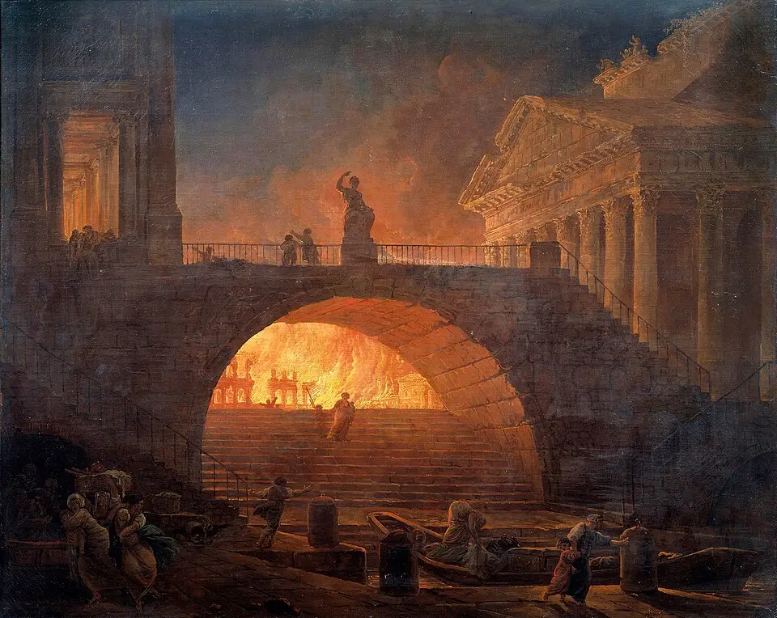
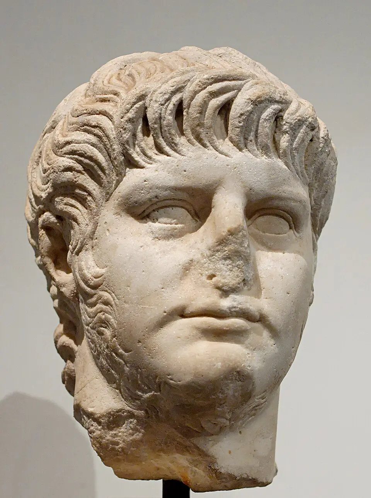
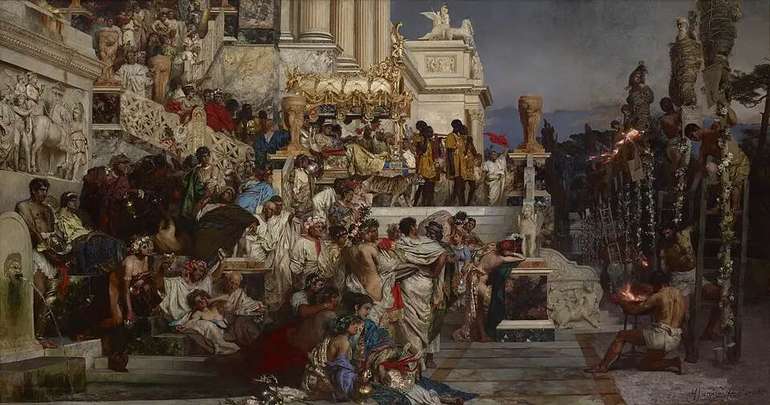

Nero không hề "đàn hát trong khi Rome bốc cháy"
Rome cháy chín ngày vào năm 64, và tin đồn kể rằng hoàng đế Nero vừa ngắm lửa vừa hát. Cây vĩ cầm trong câu thành ngữ phải gần 1.500 năm sau mới ra đời.

Tối 18 rạng sáng 19/7 năm 64, lửa bùng lên trong những cửa hàng chứa hàng dễ cháy quanh trường đua Circus Maximus ở Rome. Gió đêm đẩy lửa chạy dọc trường đua, lan vào những con phố hẹp và các khối nhà chung cư san sát. Sáu ngày sau đám cháy mới được khống chế, rồi lại bùng lên thêm ba ngày nữa. Từ đó đến nay, người ta vẫn hình dung một hoàng đế đứng trên cao, vừa đàn vừa hát nhìn thành phố cháy.
Rome mất bao nhiêu?
Theo sử gia Tacitus, trong 14 khu của Rome, 3 khu bị thiêu trụi hoàn toàn, 7 khu chỉ còn vài đống đổ nát cháy xém, và chỉ 4 khu thoát nạn. Đền thờ Jupiter Stator, nhà của các trinh nữ Vesta và cung điện Domus Transitoria của chính Nero đều bị hư hại hoặc phá hủy.
Hỏa hoạn ở Rome không hiếm. Từ năm 6, hoàng đế Augustus đã lập đội tuần đêm Vigiles để chữa cháy. Đến năm 64, thành phố có hàng nghìn Vigiles, nhưng họ chỉ có xô nước, chăn, giấm và cách phá nhà để chặn lửa. Chín đường dẫn nước của Rome không được thiết kế để chữa cháy. Ngày nay, giới sử học phần lớn cho rằng một thành phố đông đúc và thiếu chuẩn bị như vậy sớm muộn cũng sẽ gặp một thảm họa như thế. Câu hỏi là trong những ngày ấy, hoàng đế đang ở đâu.
Hoàng đế ở đâu?


Tacitus viết rằng khi lửa bùng lên, Nero đang ở biệt thự tại Antium, cách Rome khoảng 35 dặm, tức chừng 56 km. Antium cũng là nơi Nero chào đời. Ông quay về, cho chở lương thực vào thành, mở các khu vườn và công trình công cộng cho dân mất nhà trú tạm.
Tacitus khi ấy mới khoảng tám tuổi. Ông viết sau đó hàng chục năm, dựa trên hồ sơ công và các bản tường thuật, và được coi là nguồn chi tiết, đáng tin nhất còn lại. Dù vậy, ông vẫn nhắc nhiều đến tin đồn Nero có lỗi mà không buộc tội thẳng. Các bản tường thuật sớm hơn, có thể của Fabius Rusticus, Cluvius Rufus và Pliny Già, đều đã mất. Vậy chuyện đàn hát từ đâu mà ra?
Sử sách chép gì về chuyện đàn hát


Ba nguồn còn lại là Tacitus (khoảng năm 117), Suetonius (khoảng năm 121) và Cassius Dio (khoảng năm 229). Suetonius và Cassius Dio viết rằng Nero mặc trang phục sân khấu hát bài "Thành Ilium thất thủ", tức thành Troy, trong lúc Rome cháy. Tacitus thì không kết luận về trách nhiệm của Nero. Các chi tiết lưu truyền cũng không khớp nhau. Có bản nói Nero cho người giả say đi đốt nhà, rồi đứng trong cung trên đồi Palatine vừa hát vừa gảy đàn lyre. Có bản nói ông xem lửa từ tháp Maecenas trên đồi Esquiline. Có bản chỉ nói có tin đồn chưa xác thực rằng ông hát trên một sân khấu riêng trong lúc thành cháy. Và có bản nói đám cháy chỉ là tai nạn, xảy ra khi ông vắng mặt. Nhiều nhà sử học hiện đại cho rằng truyền thuyết Nero đàn hát ít nhất một phần là sản phẩm tuyên truyền của nhà Flavius, triều đại lên ngôi sau khi Nero tự sát năm 68. Nero vốn được dân thường ưa chuộng, còn tầng lớp quý tộc thì ghét ông.
Nếu Nero có chơi nhạc, thì đó là đàn lyre. Cây vĩ cầm như ta biết chỉ xuất hiện ở miền bắc nước Ý vào đầu thế kỷ 16. Những hình vẽ vĩ cầm sớm nhất có từ khoảng năm 1530. Cây vĩ cầm cổ nhất còn tồn tại do Andrea Amati làm cho vua Pháp Charles IX vào những năm 1560, nay nằm ở Bảo tàng Ashmolean, Oxford. Thành ngữ tiếng Anh "to fiddle while Rome burns", nghĩa là thờ ơ đàn hát giữa lúc khủng hoảng, mang theo một nhạc cụ không thể có mặt ở đó. Nhưng lời buộc tội nặng nhất không nằm ở cây đàn.
Suetonius chép rằng khi khánh thành, Nero chỉ nhận xét rằng cuối cùng ông cũng bắt đầu được sống như một con người.
Ai được lợi từ đám cháy?
Lời buộc tội nặng nhất nhắm vào Nero là ông đốt thành để lấy đất xây cung điện mới. Sau đám cháy, ông cho dựng Domus Aurea, tức "Nhà Vàng", trải trên các sườn đồi Palatine, Oppian và Caelian, có cả một hồ nhân tạo. Suetonius chép rằng khi khánh thành, Nero chỉ nhận xét rằng cuối cùng ông cũng bắt đầu được sống như một con người. Nhưng phần lớn khu đất ấy vốn đã thuộc về ông, và ông có thể trưng dụng phần còn lại, nên động cơ này không thuyết phục lắm.
Nero cũng ban hành những quy định xây dựng mới cho thành phố, và dấu vết quy hoạch ấy vẫn còn thấy được trong bản đồ Rome ngày nay. Để có tiền, triều đình tăng thuế, nhất là ở các tỉnh, và giảm lượng vàng trong đồng aureus cùng lượng bạc trong đồng denarius.
Theo Tacitus, Nero đổ tội cho cộng đồng Kitô hữu trong thành. Họ bị bắt và giết, có người bị chó săn xé xác, có người bị đóng đinh. Nhưng nhà sử học Anthony Barrett lưu ý rằng các tác giả Kitô giáo về sau như Tertullian hay Eusebius đều gọi Nero là kẻ bách hại đầu tiên, mà không ai nối cuộc bách hại với đám cháy. Ông gọi sự im lặng đó là "đáng chú ý". Giới sử học vẫn tranh luận liệu Tacitus có nhầm lẫn hai sự kiện hay không. Còn cung điện dựng trên tro tàn thì để lại một chữ mà ta vẫn dùng.
Chi tiết bên lề: chữ "grotesque"
Những người kế vị Nero coi Nhà Vàng là biểu tượng xa hoa đáng xấu hổ. Trong vòng 40 năm, nó bị bóc hết đá cẩm thạch, lấp đất và xây đè lên. Hoàng đế Vespasian dựng đấu trường Flavius trên chỗ cái hồ, về sau gọi là Colosseum. Cuối thế kỷ 15, một thanh niên Rome sẩy chân rơi qua một khe đất trên đồi Esquiline và thấy mình trong một "hang" đầy tranh tường. Các họa sĩ trẻ, trong đó có Raphael và Michelangelo, cho người thả dây xuống để vẽ lại. Lối trang trí ấy được gọi theo chữ grotta, nghĩa là hang, thành grotteschi. Đó là gốc của chữ "grotesque" trong nhiều thứ tiếng châu Âu.
Đám cháy năm 64 là có thật và đã tàn phá phần lớn Rome; còn hình ảnh Nero đàn hát ngắm lửa là tin đồn được các sử gia ghét ông ghi lại, với một cây đàn sai thời đại.